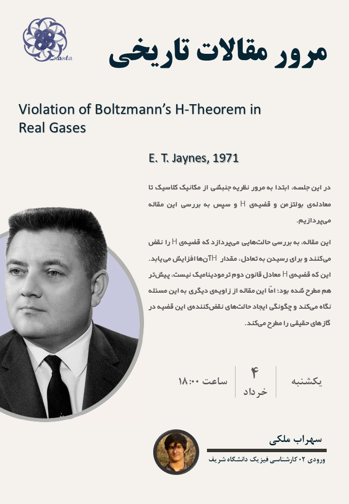

E. T. Jaynes (1971) - Violation of Boltzmann's H-Theorem in Real Gases
25 May, 2025Abstract
This paper investigates the "H-Theorem-violating" states which increase their H function in order to obtain the equilibrium. The fact that H-Theorem is not equivalent to second law of thermodynamics was previously pointed out; but this paper investigates these states in such a way that one can "produce" those states in an actual lab.
In this session, I first review the Kinetic Theory from classical mechanics to the Boltzmann's equation and H-Theorem and then, investigate this paper.

Lecturer: Sohrab Maleki
Contents
Slides PaperRecording
unfortunately, this session is not recorded.
